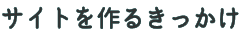
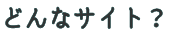
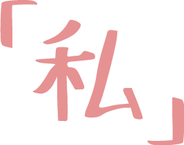

昨日の自分は過去の自分。
私は毎晩「自分は昨日よりアップデートできているか？」と問いかけてから寝ます。
そんな時、私は4月から今まで以上アップデートされると気づかされたのです。それが「社会人」になるということです。私は4月から「社会人」として働くために、3月中に「学生の果那」を静岡に捨てていこうと思いました。そのけじめ、きっかけとしてこのサイト制作です。
このサイトはポートフォリオのようなものですが、私は作品を載せるだけでは「私」は伝わらないと思っています。
「ここにこの人は美しさを感じるのか」「この体験にこの人は感動を覚えるのか」など、作品だけでは伝わらない「私」をここではお見せ致します。


実は、私は今まで一人称
しかし、社会人になってまで「果那」が一人称は恥ずかしいのでは？と思い、これをきっかけに一人称を「私」にしようと決めました。
また、「学生の果那」ではなく、「社会人の私」をこれから皆さんに、見てほしいという想いも込められています。